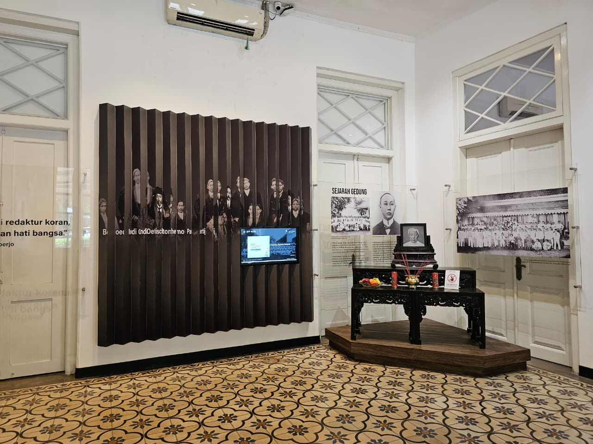
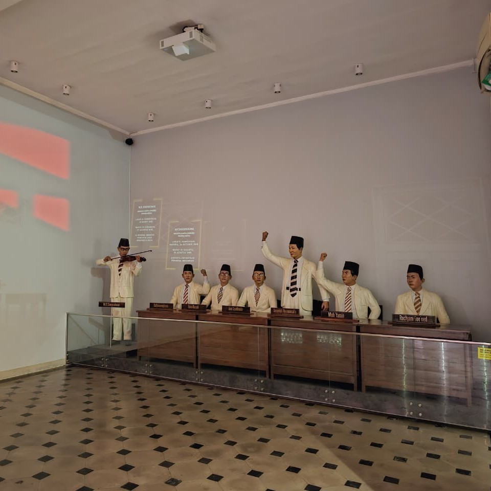

Tentang Kami
Apa yang kami lakukan

Awal Mula
Museum ini lahir untuk menjaga dan merawat sejarah lahirnya Sumpah Pemuda pada 1928

Bukti Sejarah
Berisi koleksi foto, arsip, artefak organisasi pemuda, serta rekaman perjuangan generasi 1900-an

Arah Museum
Menjadi pusat edukasi dan inspirasi bagi generasi muda agar semangat persatuan tetap hidup